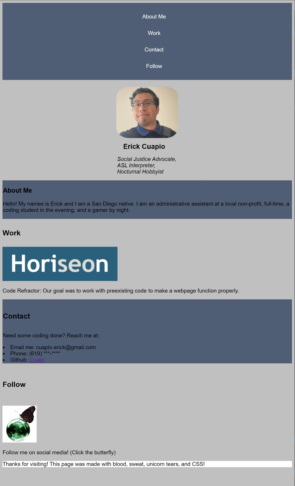
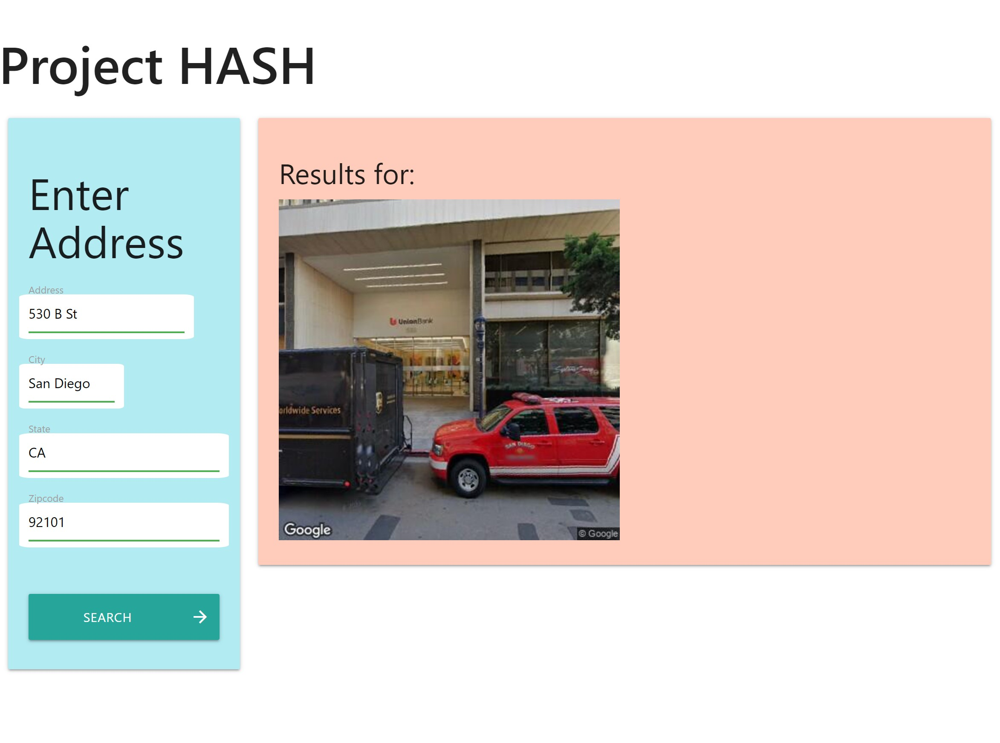

About Me
Hello! My names is Erick and I am a San Diego native. I am an administrative assistant at a local non-profit, full-time, a coding student in the evening, and a gamer by night.
Work
Code Refractor: Our goal was to work with preexisting code to make a webpage function properly.
Introducing Erick Cuapio: A project published within the first two weeks within the coding program. The above image and link will display my initial attempts in creating a portfolio with basic HTML and CSS knowledge. A great way to gauge my growth as a developer.
Project HASH: A collaborative project on
Contact
Need some coding done? Reach me at:
Follow

Follow me on social media! (Click the butterfly)